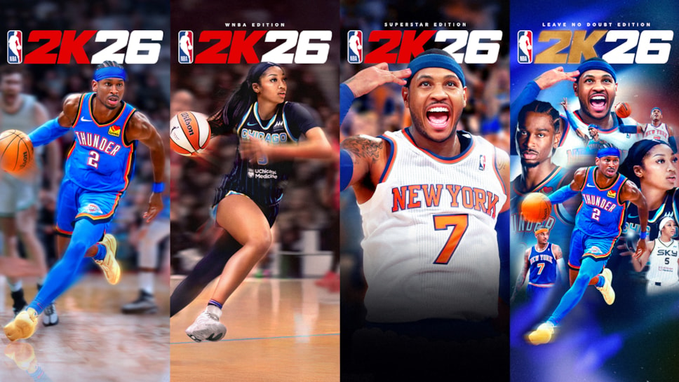
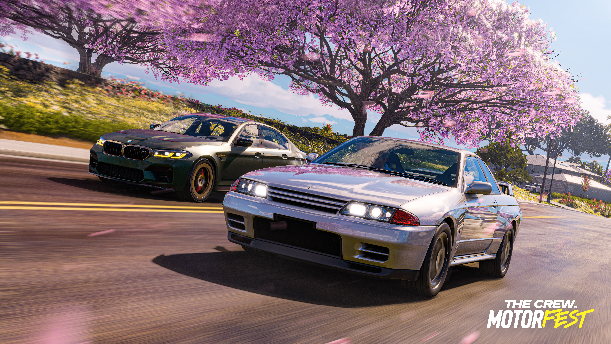
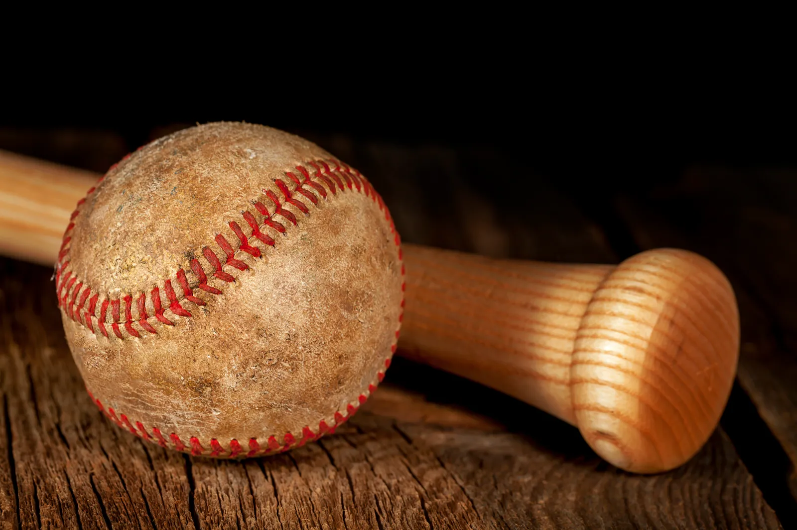
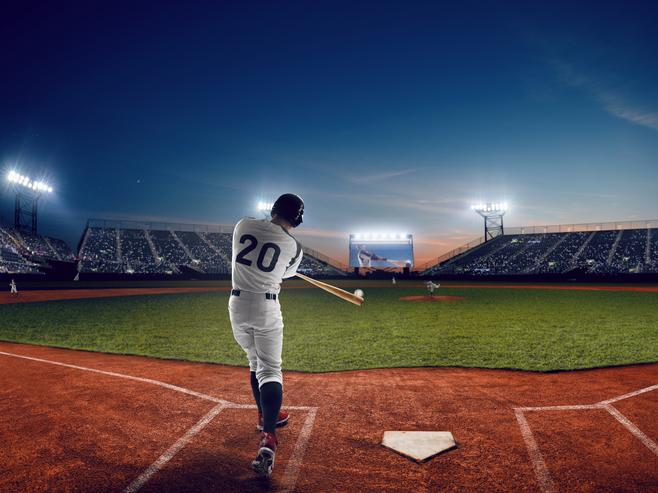

My Hobbies
Gaming
I like playing 2k26 in my spare time when I have no homework to do after school or just when I need time off to relax and what not. I love playing 2k26 very late at night and very early in the morning with friends. If I'm tired of playing 2k26 and I will most likely hop on Tom Clancy's Rainbow Six Seige also known as R6, a car driving game called The Crew Motorfest, or I'll get on my PC and do something on there.



Baseball
I like playing baseball because it was the first ever sport I ever played, I've been playing since I was 4. I like playing baseball because it gets me to go outside more and enjoy the atmosphere.


Walking Around
I love to walk around my neighborhood wit hfriends because agaain it gets me to go outside more and spend time with friends and not be in my room all day. I also like going on walks around my neighborhood becasue there might be things I haven't experienced before that I might see.